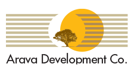
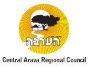
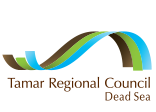
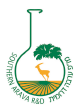
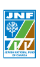
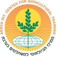

AICAT didirikan di Sapir, Israel pada tahun 1994 — dengan dukungan penuh Kementerian Luar Negeri dan Kementerian Pertanian Israel.
Arava International Center for Agriculture Training (AICAT) hadir sebagai respons atas kebutuhan global terhadap sumber daya manusia pertanian yang terampil dan berstandar internasional. Berlokasi di kawasan gurun Arava — salah satu lingkungan pertanian paling menantang di dunia — AICAT membuktikan bahwa inovasi mampu mengubah keterbatasan menjadi keunggulan.
Setiap tahun, lebih dari 1.000 mahasiswa dari berbagai lembaga akademik dunia hadir untuk belajar langsung di pusat pelatihan ini, membawa pulang tidak hanya pengetahuan, tetapi juga perspektif global tentang pertanian masa depan.
Dirancang untuk mempersiapkan generasi petani modern yang siap bersaing di panggung global.
Program intensif jangka panjang yang mengintegrasikan teori akademik dengan praktik lapangan langsung. Peserta mendapatkan pengalaman mengelola pertanian modern berbasis teknologi, sistem irigasi canggih, serta agribisnis berkelanjutan. Didukung oleh instruktur berpengalaman dan fasilitas pertanian mutakhir di Arava, Israel.
Program UtamaProgram singkat namun padat yang difokuskan pada bidang-bidang spesifik pertanian lanjutan: teknologi greenhouse, pengelolaan sumber daya air, pertanian organik, hingga digitalisasi agrikultur. Ideal bagi petani, penyuluh, dan profesional pertanian yang ingin meningkatkan keahlian dalam waktu singkat.
Studi LanjutanProgram kami dibangun di atas keyakinan bahwa pengalaman nyata adalah guru terbaik. Kombinasi sempurna antara praktik lapangan, studi teoritis, dan kunjungan komunitas menciptakan pengalaman belajar yang kaya dan tak tergantikan.
Peserta bekerja langsung di lahan pertanian canggih mengoperasikan sistem irigasi tetes, greenhouse berteknologi tinggi, dan peralatan pertanian modern yang sesungguhnya.
Sesi kelas yang dipandu oleh pakar pertanian internasional membekali peserta dengan landasan ilmiah yang kokoh untuk mendukung setiap tindakan di lapangan.
Tur ke kawasan regional, kunjungan riset ke pusat-pusat pertanian Israel, serta kehidupan bersama peserta dari berbagai negara yang memperkaya perspektif global setiap individu.

AICAT menjalin kerja sama erat dengan The Yair Research and Development Center pusat riset ilmiah terkemuka yang didirikan pada tahun 1986 dengan misi mengembangkan metode budidaya berkelanjutan di kawasan kering.
"Pusat ini memimpin penelitian di bidang pertanian berkelanjutan, manajemen air, dan akuakultur — menghasilkan pengetahuan kritis yang bermanfaat tidak hanya bagi komunitas pertanian lokal, tetapi juga bagi negara-negara di seluruh dunia."
Selama program berlangsung, setiap peserta mengunjungi Yair Center beberapa kali sesuai dengan mata pelajaran yang sedang dipelajari. Para peneliti Yair Center juga aktif mengajar dan berbagi temuan terbaru di kelas-kelas AICAT, memastikan peserta selalu terhubung dengan perkembangan ilmu pertanian terkini.
AICAT beroperasi dengan dukungan jaringan institusi pemerintah, akademik, dan swasta bertaraf internasional.

Arava Development Co.

Central Arava Regional Council

Tamar Regional Council

Eilot Regional Council
JNF – Jewish National Fund

JNF – Jewish National Fund
Tel Aviv University
Kementerian Luar Negeri Israel

Kementerian Pertanian Israel
Jadilah bagian dari ribuan alumni yang telah mengubah pertanian di negara masing-masing.